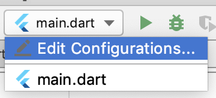
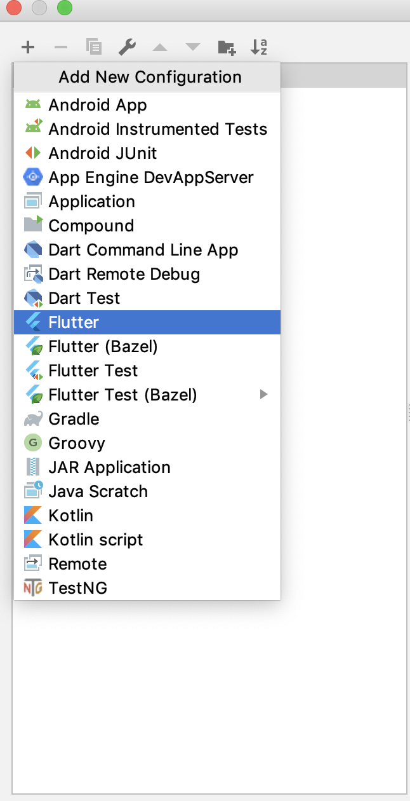
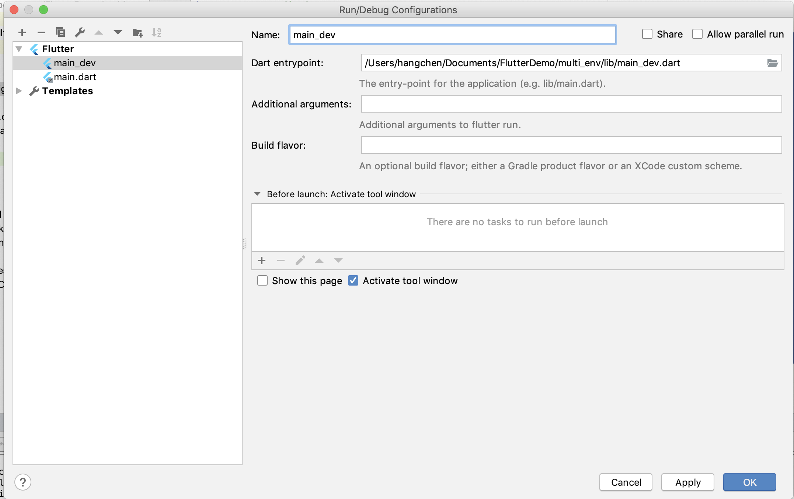
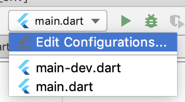
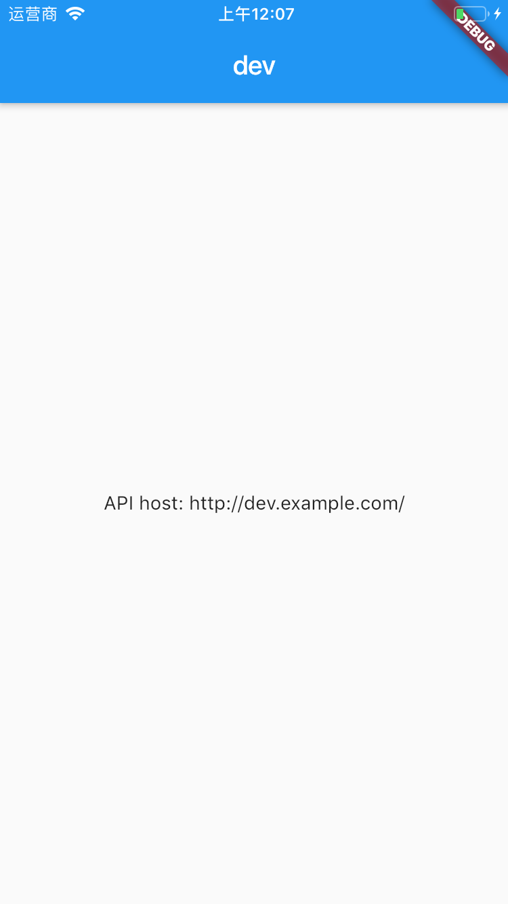
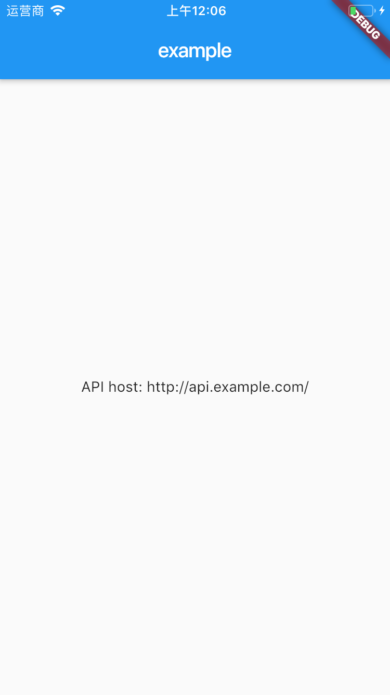

- 00 开篇词 为什么每一位大前端从业者都应该学习Flutter？.md
- 01 预习篇 · 从0开始搭建Flutter工程环境.md
- 02 预习篇 · Dart语言概览.md
- 03 深入理解跨平台方案的历史发展逻辑.md
- 04 Flutter区别于其他方案的关键技术是什么？.md
- 05 从标准模板入手，体会Flutter代码是如何运行在原生系统上的.md
- 06 基础语法与类型变量：Dart是如何表示信息的？.md
- 07 函数、类与运算符：Dart是如何处理信息的？.md
- 08 综合案例：掌握Dart核心特性.md
- 09 Widget，构建Flutter界面的基石.md
- 10 Widget中的State到底是什么？.md
- 11 提到生命周期，我们是在说什么？.md
- 12 经典控件（一）：文本、图片和按钮在Flutter中怎么用？.md
- 13 经典控件（二）：UITableView_ListView在Flutter中是什么？.md
- 14 经典布局：如何定义子控件在父容器中排版的位置？.md
- 15 组合与自绘，我该选用何种方式自定义Widget？.md
- 16 从夜间模式说起，如何定制不同风格的App主题？.md
- 17 依赖管理（一）：图片、配置和字体在Flutter中怎么用？.md
- 18 依赖管理（二）：第三方组件库在Flutter中要如何管理？.md
- 19 用户交互事件该如何响应？.md
- 20 关于跨组件传递数据，你只需要记住这三招.md
- 21 路由与导航，Flutter是这样实现页面切换的.md
- 22 如何构造炫酷的动画效果？.md
- 23 单线程模型怎么保证UI运行流畅？.md
- 24 HTTP网络编程与JSON解析.md
- 25 本地存储与数据库的使用和优化.md
- 26 如何在Dart层兼容Android_iOS平台特定实现？（一）.md
- 27 如何在Dart层兼容Android_iOS平台特定实现？（二）.md
- 28 如何在原生应用中混编Flutter工程？.md
- 29 混合开发，该用何种方案管理导航栈？.md
- 30 为什么需要做状态管理，怎么做？.md
- 31 如何实现原生推送能力？.md
- 32 适配国际化，除了多语言我们还需要注意什么_.md
- 33 如何适配不同分辨率的手机屏幕？.md
- 34 如何理解Flutter的编译模式？.md
- 35 Hot Reload是怎么做到的？.md
- 36 如何通过工具链优化开发调试效率？.md
- 37 如何检测并优化Flutter App的整体性能表现？.md
- 38 如何通过自动化测试提高交付质量？.md
- 39 线上出现问题，该如何做好异常捕获与信息采集？.md
- 40 衡量Flutter App线上质量，我们需要关注这三个指标.md
- 41 组件化和平台化，该如何组织合理稳定的Flutter工程结构？.md
- 42 如何构建高效的Flutter App打包发布环境？.md
- 43 如何构建自己的Flutter混合开发框架（一）？.md
- 44 如何构建自己的Flutter混合开发框架（二）？.md
- 特别放送 温故而知新，与你说说专栏的那些思考题.md
- 结束语 勿畏难，勿轻略.md
34 如何理解Flutter的编译模式？
你好，我是陈航。今天，我们来聊聊Flutter的编译模式吧。
在开发移动应用程序时，一个App的完整生命周期包括开发、测试和上线3个阶段。在每个阶段，开发者的关注点都不一样。
比如，在开发阶段，我们希望调试尽可能方便、快速，尽可能多地提供错误上下文信息；在测试阶段，我们希望覆盖范围尽可能全面，能够具备不同配置切换能力，可以测试和验证还没有对外发布的新功能；而在发布阶段，我们则希望能够去除一切测试代码，精简调试信息，使运行速度尽可能快，代码足够安全。
这就要求开发者在构建移动应用时，不仅要在工程内提前准备多份配置环境，还要利用编译器提供的编译选项，打包出符合不同阶段优化需求的App。
对于Flutter来说，它既支持常见的Debug、Release等工程物理层面的编译模式，也支持在工程内提供多种配置环境入口。今天，我们就来学习一下Flutter提供的编译模式，以及如何在App中引用开发环境和生产环境，使得我们在不破坏任何生产环境代码的情况下，能够测试处于开发期的新功能。
Flutter的编译模式
Flutter支持3种运行模式，包括Debug、Release和Profile。在编译时，这三种模式是完全独立的。首先，我们先来看看这3种模式的具体含义吧。
- Debug模式对应Dart的JIT模式，可以在真机和模拟器上同时运行。该模式会打开所有的断言（assert），以及所有的调试信息、服务扩展和调试辅助（比如Observatory）。此外，该模式为快速开发和运行做了优化，支持亚秒级有状态的Hot reload（热重载），但并没有优化代码执行速度、二进制包大小和部署。flutter run –debug命令，就是以这种模式运行的。
- Release模式对应Dart的AOT模式，只能在真机上运行，不能在模拟器上运行，其编译目标为最终的线上发布，给最终的用户使用。该模式会关闭所有的断言，以及尽可能多的调试信息、服务扩展和调试辅助。此外，该模式优化了应用快速启动、代码快速执行，以及二级制包大小，因此编译时间较长。flutter run –release命令，就是以这种模式运行的。
- Profile模式，基本与Release模式一致，只是多了对Profile模式的服务扩展的支持，包括支持跟踪，以及一些为了最低限度支持所需要的依赖（比如，可以连接Observatory到进程）。该模式用于分析真实设备实际运行性能。flutter run –profile命令，就是以这种模式运行的。
由于Profile与Release在编译过程上几乎无差异，因此我们今天只讨论Debug和Release模式。
在开发应用时，为了便于快速发现问题，我们通常会在运行时识别当前的编译模式，去改变代码的部分执行行为：在Debug模式下，我们会打印详细的日志，调用开发环境接口；而在Release模式下，我们会只记录极少的日志，调用生产环境接口。
在运行时识别应用的编译模式，有两种解决办法：
- 通过断言识别；
- 通过Dart VM所提供的编译常数识别。
我们先来看看如何通过断言识别应用的编译模式。
通过Debug与Release模式的介绍，我们可以得出，Release与Debug模式的一个重要区别就是，Release模式关闭了所有的断言。因此，我们可以借助于断言，写出只在Debug模式下生效的代码。
如下所示，我们在断言里传入了一个始终返回true的匿名函数执行结果，这个匿名函数的函数体只会在Debug模式下生效：
assert(() {
//Do sth for debug
return true;
}());
需要注意的是，匿名函数声明调用结束时追加了小括号（）。 这是因为断言只能检查布尔值，所以我们必须使用括号强制执行这个始终返回true的匿名函数，以确保匿名函数体的代码可以执行。
接下来，我们再看看如何通过编译常数识别应用的编译模式。
如果说通过断言只能写出在Debug模式下运行的代码，而通过Dart提供的编译常数，我们还可以写出只在Release模式下生效的代码。Dart提供了一个布尔型的常量kReleaseMode，用于反向指示当前App的编译模式。
如下所示，我们通过判断这个常量，可以准确地识别出当前的编译模式：
if(kReleaseMode){
//Do sth for release
} else {
//Do sth for debug
}
分离配置环境
通过断言和kReleaseMode常量，我们能够识别出当前App的编译环境，从而可以在运行时对某个代码功能进行局部微调。而如果我们想在整个应用层面，为不同的运行环境提供更为统一的配置（比如，对于同一个接口调用行为，开发环境会使用dev.example.com域名，而生产环境会使用api.example.com域名），则需要在应用启动入口提供可配置的初始化方式，根据特定需求为应用注入配置环境。
在Flutter构建App时，为应用程序提供不同的配置环境，总体可以分为抽象配置、配置多入口、读配置和编译打包4个步骤：
- 抽象出应用程序的可配置部分，并使用InheritedWidget对其进行封装；
- 将不同的配置环境拆解为多个应用程序入口（比如，开发环境为main-dev.dart、生产环境为main.dart），把应用程序的可配置部分固化在各个入口处；
- 在运行期，通过InheritedWidget提供的数据共享机制，将配置部分应用到其子Widget对应的功能中；
- 使用Flutter提供的编译打包选项，构建出不同配置环境的安装包。
接下来，我将依次为你介绍具体的实现步骤。
在下面的示例中，我会把应用程序调用的接口和标题进行区分实现，即开发环境使用dev.example.com域名，应用主页标题为dev；而生产环境使用api.example.com域名，主页标题为example。
首先是配置抽象。根据需求可以看出，应用程序中有两个需要配置的部分，即接口apiBaseUrl和标题appName，因此我定义了一个继承自InheritedWidget的类AppConfig，对这两个配置进行封装：
class AppConfig extends InheritedWidget {
AppConfig({
@required this.appName,
@required this.apiBaseUrl,
@required Widget child,
}) : super(child: child);
final String appName;//主页标题
final String apiBaseUrl;//接口域名
//方便其子Widget在Widget树中找到它
static AppConfig of(BuildContext context) {
return context.inheritFromWidgetOfExactType(AppConfig);
}
//判断是否需要子Widget更新。由于是应用入口，无需更新
@override
bool updateShouldNotify(InheritedWidget oldWidget) => false;
}
接下来，我们需要为不同的环境创建不同的应用入口。
在这个例子中，由于只有两个环境，即开发环境与生产环境，因此我们将文件分别命名为main_dev.dart和main.dart。在这两个文件中，我们会使用不同的配置数据来对AppConfig进行初始化，同时把应用程序实例MyApp作为其子Widget，这样整个应用内都可以获取到配置数据：
//main_dev.dart
void main() {
var configuredApp = AppConfig(
appName: 'dev',//主页标题
apiBaseUrl: 'http://dev.example.com/',//接口域名
child: MyApp(),
);
runApp(configuredApp);//启动应用入口
}
//main.dart
void main() {
var configuredApp = AppConfig(
appName: 'example',//主页标题
apiBaseUrl: 'http://api.example.com/',//接口域名
child: MyApp(),
);
runApp(configuredApp);//启动应用入口
}
完成配置环境的注入之后，接下来就可以在应用内获取配置数据，来实现定制化的功能了。由于AppConfig是整个应用程序的根节点，因此我可以通过调用AppConfig.of方法，来获取到相关的数据配置。
在下面的代码中，我分别获取到了应用主页的标题，以及接口域名，并显示了出来：
class MyApp extends StatelessWidget {
@override
Widget build(BuildContext context) {
var config = AppConfig.of(context);//获取应用配置
return MaterialApp(
title: config.appName,//应用主页标题
home: MyHomePage(),
);
}
}
class MyHomePage extends StatelessWidget {
@override
Widget build(BuildContext context) {
var config = AppConfig.of(context);//获取应用配置
return Scaffold(
appBar: AppBar(
title: Text(config.appName),//应用主页标题
),
body: Center(
child: Text('API host: ${config.apiBaseUrl}'),//接口域名
),
);
}
}
现在，我们已经完成了分离配置环境的代码部分。最后，我们可以使用Flutter提供的编译选项，来构建出不同配置的安装包了。
如果想要在模拟器或真机上运行这段代码，我们可以在flutter run命令后面，追加–target或-t参数，来指定应用程序初始化入口：
//运行开发环境应用程序
flutter run -t lib/main_dev.dart
//运行生产环境应用程序
flutter run -t lib/main.dart
如果我们想在Android Studio上为应用程序创建不同的启动配置，则可以通过Flutter插件为main_dev.dart增加启动入口。
首先，点击工具栏上的Config Selector，选择Edit Configurations进入编辑应用程序启动选项：

图1 Config Selector新增入口
然后，点击位于工具栏面板左侧顶部的“+”按钮，在弹出的菜单中选择Flutter选项，为应用程序新增一项启动入口：

图2 选择新增类型
最后，在入口的编辑面板中，为main_dev选择程序的Dart入口，点击OK后，就完成了入口的新增工作：

图3 编辑启动入口
接下来，我们就可以在Config Selector中切换不同的启动入口，从而直接在Android Studio中注入不同的配置环境了：

图4 Config Selector切换启动入口
我们试着在不同的入口中进行切换和运行，可以看到，App已经可以识别出不同的配置环境了：

图5 开发环境运行示例

图6 生产环境运行示例
而如果我们想要打包构建出适用于Android的APK，或是iOS的IPA安装包，则可以在flutter build 命令后面，同样追加–target或-t参数，指定应用程序初始化入口：
//打包开发环境应用程序
flutter build apk -t lib/main_dev.dart
flutter build ios -t lib/main_dev.dart
//打包生产环境应用程序
flutter build apk -t lib/main.dart
flutter build ios -t lib/main.dart
总结
好了，今天的分享就到这里。我们来总结一下今天的主要内容吧。
Flutter支持Debug与Release的编译模式，并且这两种模式在构建时是完全独立的。Debug模式下会打开所有的断言和调试信息，而Release模式下则会关闭这些信息，因此我们可以通过断言，写出只在Debug模式下生效的代码。而如果我们想更精准地识别出当前的编译模式，则可以利用Dart所提供的编译常数kReleaseMode，写出只在Release模式下生效的代码。
除此之外，Flutter对于常见的分环境配置能力也提供了支持，我们可以使用InheritedWidget为应用中可配置部分进行封装抽象，通过配置多入口的方式为应用的启动注入配置环境。
需要注意的是，虽然断言和kReleaseMode都能够识别出Debug编译模式，但它们对二进制包的打包构建影响是不同的。
采用断言的方式，其相关代码会在Release构建中被完全剔除；而如果使用kReleaseMode常量来识别Debug环境，虽然这段代码永远不会在Release环境中执行，但却会被打入到二进制包中，增大包体积。因此，如果没有特殊需求的话，一定要使用断言来实现Debug特有的逻辑，或是在发布期前将使用kReleaseMode判断的Debug逻辑完全删除。
我把今天分享所涉及到的知识点打包到了GitHub中，你可以下载下来，反复运行几次，加深理解与记忆。
思考题
最后，我给你留一道思考题吧。
在保持生产环境代码不变的情况下，如果想在开发环境中支持不同配置的切换，我们应该如何实现？
欢迎你在评论区给我留言分享你的观点，我会在下一篇文章中等待你！感谢你的收听，也欢迎你把这篇文章分享给更多的朋友一起阅读。
© 2019 - 2023 Liangliang Lee. Powered by gin and hexo-theme-book.